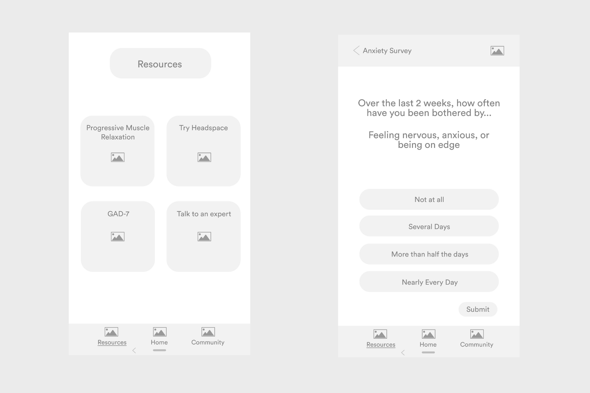

Mental health is on the decline and technology is making it worse. There is a gap in the market for bringing transparency to the impact digital content has on our lives.
The Vision
Design an AI focused on understanding your mental wellbeing. This is of course a lofty goal, and we must take things one step at a time. To start, we would need to develop an experience that is not only useful to thousands of people around the world, but simple to use.Version 1 of PeggyMeter.
My Role
When I first joined PeggyJo, it was in it's early startup stages, with an initial product. However, upon closer inspection, I took notice of quite a few of usability issues across the entire mobile experience. Determined to address those issues, I got to work. As the lead product designer on the team, I co-directed the overall product experience and assisted with concept re-definement & ideation. In the initial stages, I conducted user interviews in order to examine our idea from the perspective of people who are not familiar with our project. Later on, I led the effort to implement re-iterations of the current mobile app designs within our emerging AI. My main tasks included wireframing, user interface design, and mockups.
Users & Audience
The target users of PeggyJo are college students — aged from 18 to 24— , who understand the importance of mental well-being. A key differentiator of this user group is that they are typically heavy users of social media platforms like Snapchat or Facebook, so they want something that feels familiar, but ultimately does not limit or degrade their mental wellbeing.PeggyJo Survey: n=104
Initial Findings
In order to improve our initial concept of our AI, we ran user surveys. Running surveys was a quick and relatively easy way to get insights from our users and grasp a better understanding of our usability goals. Potential consumers can give you first-hand information about what is missing, what they would like the product to be able to do, and why they are unable to do those things with existing products/services.Starting with insights/trends for stress & anxiety.
Information Architecture
Before jumping into wireframing and prototyping I decided to take a look at all the necessary screens, and solidify the basis of our information architecture.Home - Allows users to track/monitor their individual progress and overall anxiety. Resources - Allows users to browse a variety of mental health resources available to them, i.e. GAD-7, speaking to an expert, etc. Community - Provides users with a supportive community through curated groups/forums, surveys, articles, etc.The basis of our user flow.
Wireframes
Wireframes are a great tool to think about early in the design process. Mapping out the functionality early will reduce the amount of back and forth that often arises within the development phase. Below are some wireframes I designed based on the insights we gained through our initial research and current user flow.Home

ResourcesCommunity
Mockup
A mockup helps you make final decisions regarding a product’s color schemes, visual style, typography. With a mockup, you can allow yourself to experiment with the visual side of the product to see what looks the best. The particular visual style and color scheme was chosen to provide users with a clean, child-like, and friendly overall user experience.Our current user interface.
Takeaways
Always remember to take photos. This helps a great deal when documenting the process. Don't be afraid to venture outside of the general scope of things. Brainstorming sessions are most productive when group members come in with sets of unique ideas, and then are able to combine, interpret, and refine them together.Work is never finished. In a startup environment the process is constantly evolving. As a product designer, you need to understand that finishing a feature to the very end of perfection is a waste of time and resources.